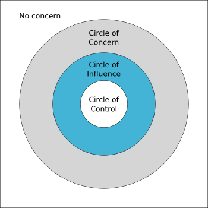

2023-02-24
The three circles of our everyday life
প্রবন্ধ-ইংরেজিThe first thing I really believe in is a circle of control. You may not be able to control what governments are doing or what certain people in the world are doing. You can't change what people on the other side of the world are doing.

As an example, If you live in Bangladesh. You can't change what the US President or Russian President is doing in Ukraine. In reality, I know you suffered a lot in various ways for the war!
Likewise, you really can't do anything about the horrible traffic jam or problems in the public transport system in Dhaka. Who knows better than me, how I suffer a lot every single day of my life till I quit that city! But I couldn't change anything except my view of life. You really can't, so don't focus on that. Focusing on those circles of concern and influence can be really depressing for you.
I focus on the stuff that I can control. I can control my life and my time. If you've got a job and you have to work a certain number of hours, your boss could control that. But you may have some flexibility there to decide what you do with your time. And after work, what are you doing with your time? What are you doing with your time on weekends? Guys, it really matters.
Organize your day, and work not hard but in a smart and efficient way. As an example for me, and I'm not telling you that this is what you have to do, I know lots of people who don't watch television because it can be a huge time sink, as it takes a huge amount of time. Even it can be really depressing. They'd rather use their time for other things. I can't recommend not keeping you updated but not this lazy way.
You have to decide what's important for you and prioritize what's important for you. But the point is, you can control your time. You can decide where you spend your time. So don't spend time on things that give you no return. Rather than spend time on things that will give you a long return. Rather spend your time learning something that can help you in the future. Another important principle is the 80-20 rule, also known as the Pareto principle, 80% of consequences come from 20% of the cause.
Your Circle of Concern is all of the things that you care about, including things that have a big impact on your life (like government affairs, the environment, and other people's yards) and things that are more personal (like your own feelings). No matter what, you can't control these things, but they can still affect your life.
The Circle of Influence is a narrowing of the first circle to those issues we can influence either directly or indirectly. People who focus on issues in their Circle of Influence expand and magnify their positive energy, and this results in their circle of influence growing. People who make decisions based on their values stay within their Circle of Influence, which helps them stay proactive and effective.
Proactive people focus on things they can control, rather than reacting to conditions over which they have little or no control. This way, they can take control of their lives and manage their situation in the best possible way.

So think about your circle of concern, circle of influence, and circle of control. Your life, your time, your goal, you have to decide, you have to draw off your circle of control. And I know you will able to control that perfectly orchestrate.